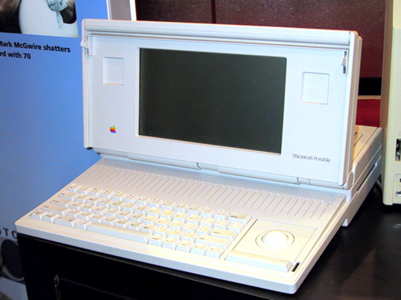

Dok se Apple nalazi na svom prvom vrhuncu u razvoju kompjuterske tehnologije je dolazilo do drastičnih promena. Prva od njih, ali ipak manje važna je bila propast Atarija i Commodore International s kojima je cele osamdesete godine Apple vodio borbu na život i smrt. Drugi, ali mnogo važniji događaj postaje izumiranje Motorola 68000 serije procesora oko koje su izgrađene sve Appleove verzije kompjutera. Procesor Motorola 68040 iz 1990. godine koji je trebao predstavljati novo, jače. brže srce Macintosh kompjutera je ispao u megahercima sporiji od prethodnika, a to će se potom ponoviti i s poslednjom generacijom ovim procesora. Kako bi se kompanija izvukla iz ovog nepremostivog problema dolazi 1991. godine do sklapanja saveza Apple-IBM-Motorola o stvaranju nove serije PowerPC procesora. Na žalost po Apple ona na tržište izlazi tek 1994. godine tako da će proći previše vremena do masovne proizvodnje za tržište po ceni pristupačnih Macintosha.Dok se Apple ne svojom greškom našao u tim kompjuterskim problemima brzina intelovih procesora je porasla s 33 megaherca na 80 megarehca što dovodi do stvaranja sve modernijih verzija Windowsa i sve jeftinijih IBM PC kompaktibilnih kompjutera. Zahvaljujući tome su 1992. godine izašli Windowsi 3.1 i Appleu nanijeli veliku tržišnu štetu, odnosno poslovne gubitke Appleu 1993. godine, zbog čega je smijenjen direktor kompanije.
